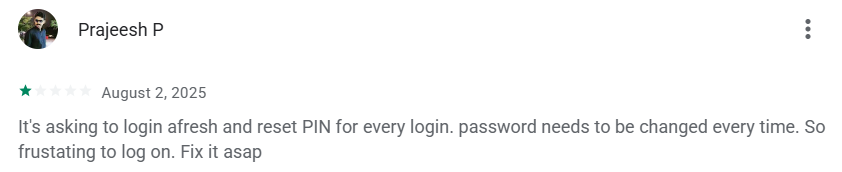
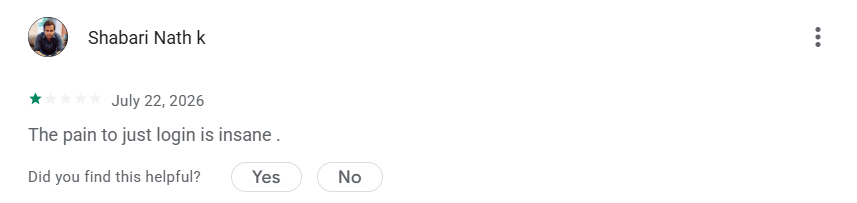
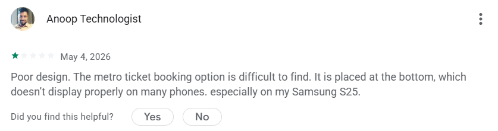
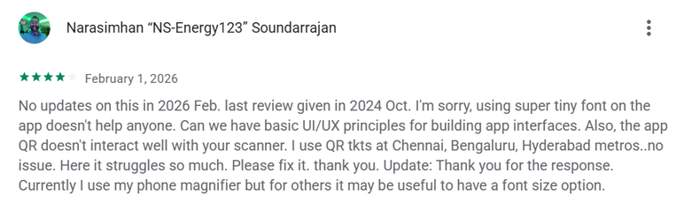
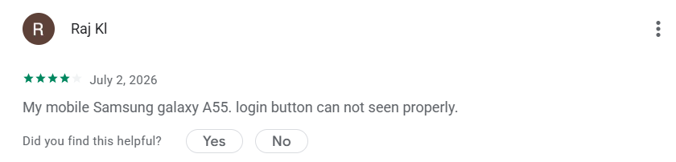
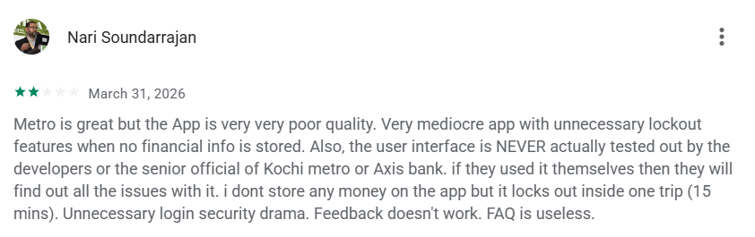
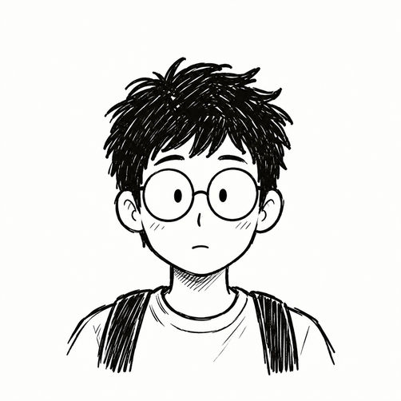

Kochi1 Redesign
Kochi1 brings metro tickets, water metro, feeder buses, and smart card payments into one unified ecosystem. However, real commuter research revealed a critical gap between feature offerings and everyday usability.

About the Kochi1 App
Kochi1 is an all-in-one mobility and payment app developed by Kochi Metro Rail Limited (KMRL) in partnership with Axis Bank, designed to simplify everyday travel across Kochi. Commuters can book metro tickets, plan journeys, check real-time transit information, and manage their Kochi1 Smart Card from a single platform.
The app brings together smart card recharge, balance management, QR ticketing, routes, fares, and nearby transit information, serving as the central digital touchpoint for Kochi’s public transport network.
A Strong Product, but a Disconnected Experience
While Kochi1 brings transit, payments, and mobility together, our fieldwork uncovered an adoption paradox. Despite widespread awareness of the app across the city, only a fraction of commuters rely on it for their daily trips.
Real Commuter Frustrations
Despite being the official transit platform, recent app store reviews reveal recurring friction points, ticketing timeouts, and confusion between the planner and booking sections.






Competitor Analysis
Evaluating regional and global multimodal transit platforms to benchmark ticketing speed, information clarity, and operator integration:
Core Strength
- Multimodal mobility across bus, metro, rail & ferry
- Map-based route planning
- Direct card recharge & balance
Where It Works Well
- Unified ticketing under one roof
- Detailed station information
- Fast single-trip QR generation
Where It Fails
- Complex ecosystem with multiple operators
- Overloaded feature set without hierarchy
- Limited clarity on multimodal connections
Heuristic Evaluation
Using Nielsen’s usability heuristics to identify fundamental interface breakdowns across core flows:
Visibility of System Status
After editing profile information and pressing “Save Changes”, there is no visible confirmation such as “Changes saved” or a success state.
Match Between System and Real World
On the homepage, the “Offers” button suggests the user will view transit or merchant discounts. Instead, it opens an unorganized category directory (tourist attractions, ATMs, fuel stations), with “Offers” nested again inside.
Consistency and Standards
When a commuter selects “Offers”, they reach a screen with another “Offers” button and must select it a second time to view discounts.
Survey & Commuter Insights
Conducted surveys with 80+ active commuters and 5+ qualitative deep-dive interviews across Kochi Metro stations (Aluva, Edappally, MG Road, Maharaja’s College, Vyttila Mobility Hub).
Key Research Finding: High digital comfort does not translate into a good Kochi1 experience. Even tech-savvy students and corporate employees found the dual "Planner" and "Book Tickets" taxonomy confusing under time constraints.
Three Real Commuter Archetypes
To anchor design decisions in authentic human contexts, we synthesized research findings into three distinct personas, each paired with a real-life transit scenario, illustrated storyboard, and 4-quadrant empathy map:

Rahul Ajith
- QR ticket scanning errors at entry turnstiles
- Unclear ticket validity expiration windows
- Card balance lag after online recharge
- Book tickets in under 15 seconds
- Never miss the scheduled metro train
- Trust real-time balance updates

“My ticket is valid, so why isn’t it scanning?”
“Will my money be refunded if it fails?”
Rapidly checks phone screen brightness at turnstile.
Steps out of line to refresh app balance.
Frustrated by delayed confirmation states.
Anxious about holding up the commuter queue.
“Buying a physical token would have been faster.”
“Why doesn’t the app save my offline QR ticket?”
Anu Natan
- Cannot easily locate Water Metro schedules
- Separate screens for boat and train timings
- Unclear transfer walking distances between hubs
- Seamlessly connect Water Metro with feeder bus
- View reliable departure countdown timers
- Plan scenic commute routes without second-guessing

“Where can I find Water Metro timings quickly?”
“Why is transit information scattered in different places?”
Taps back and forth between Planner and Metro lines.
Switches to Google Maps to verify terminal location.
Disappointed by disjointed multimodal integration.
Hesitant to rely solely on Kochi1 for time-critical trips.
“Kochi1 should be the single source of truth for all transit.”
“Why does a combined trip feel like 3 separate journeys?”
Meera Ram
- Confusion between “Planner” and “Book Tickets” options
- Cluttered route recommendations with complex transfer icons
- Fear of taking the wrong direction or missing connecting bus
- Clear, linear step-by-step guidance from origin to destination
- Know exactly which platform and gate to use
- Feel calm and reassured throughout the journey

“Planner or Book Tickets? Aren’t they the same?”
“How do I know where to change from ferry to train?”
Opens planner, enters destination, gets overwhelmed, and closes app.
Asks a fellow commuter at the station counter for help.
Overwhelmed by dense technical route diagrams.
Stressed about arriving late to her appointment.
“I just want the app to tell me the easiest route simply.”
“I don’t have time to decode complicated icons.”
Information Architecture
Restructuring the Kochi1 transit ecosystem from a fragmented, multi-layer hierarchy into an intuitive multimodal pathway that unifies ticketing, navigation, and smart card management:
Existing Information Architecture
Multi-layered navigation with redundant menu tiers, overlapping planner routes, and fragmented card balance services.
Redesigned Information Architecture
Streamlined hierarchy: unified multimodal ticketing, real-time timetable integration, and direct one-tap card management.
User Flows
Step-by-step task flows designed to eliminate friction across metro booking, multimodal transfers, and payment validation:
Key Task Decision Flows
The screens are in the process of being designed.
Translating verified user insights, simplified information architecture, and core journey flows into refined, accessible high-fidelity interfaces for Kochi’s daily commuters.